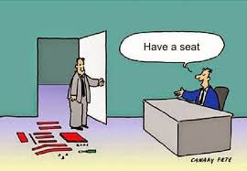

Actually, I still consider myself to be a student in the field of web design. As you so well know, web design has and continues to evolve on a daily basis so I don't even try to make the inference that my degree has made me an expert in the field. I will say that the mechanics of how web pages manifest themselves is truly an interesting subject. It fascinates me and I also find it challenging to develop content and a user experience that resonates with a targeted audience. To further develop that skill I found it nescessary to take some additional advertising and marketing courses. As a teenager I was an avid comic book reader and practiced art and design. I pride myself on my ability to to adapt to changing and somtimes unforeseen circumstances. To me, it is the combination of all of these attributes and experiences, coupled with an understanding that learning process is one that is a life-long journey that makes me a contender for an entry-level position here at your organization.
If you were building an "online house", HTML wouild be the structure and framework of the house (your walls, roof and foundation). CSS makes it pretty(you could consider this the paint ands decorative items). Javascript is the infrastructure (the behind the walls structures that make your lights, gas and water work). In more technical terms, these three web standards are the buliding blocks of modern day web design. HTML is markup language composed of elements, which contain attributes (some optional and some mandatory.) These elements are used to mark up the various different types of content in documents, specifying what each bit of content is supposed to be rendered as in web browsers (for example headings, paragraphs, tables, bulleted lists etc.). Cascading Style Sheets gives you fine control over the formatting and layout of your document. CSS works on a system of rules, which select the elements you want to style, and then set values for different properties of the elements. You can change or add colors, backgrounds, font sizes and styles, and even position things on your web page in different places. JavaScript is the scripting language that you use to add behaviour to your web pages — it can be used to validate the data you enter into a form (tell you if it is in the right format or not), provide drag and drop functionality, change styles on the fly, animate page elements such as menus, handle button functionality, and a million other things.
I would say that class was 15% theory and 85% doing (the most effective way to learn coding). Most classes began with the instructor providing students with the necessary frameworks that are required to build a construct, followed by a few good examples. We were then given an assignment that required us to assimilate the knowledge provided and produce the assigned project. There was a lot of trial and error in producing projects and skills learned such as; Thinking a problem through before taking action; good/common practices with site structure; pitfall awareness; and learning gracefully fail and still rise again. Collaboration was incouraged as well as acquiring addiional resources. We were introduced to and utilized platforms like GitHub and Slack. As a course requirement we were required to create a portfolio of our completed projects in a repository on the College's website that we uploaded ourselves using Dreamweaver.
Yes. The last programming class that I took was over 30 years ago (Fortran). So this was basically a new language for me, with all of the pitfalls and problems that accompany this type of undertaking. Ultimately I wish to learn how to code properly and creatively, not just become a mindless robot requrgetating formulaic code. I also had to give up my (bad) habit of trying to learn everything on my own. Once I renounced my silo mentality and embraced the concept of collaboration, my projects did not take as long as they did in the beginning to complete. The lack of time and project deadlines became more of an over-riding factor rather than actually figuring out the problem's solution. Ultimately, there just aren't enough hours in the day to accomplish all that I needed to, so adaptations became a necessity. I am actually looking forward to the break between semesters which will hopefully afford me some time to further hone this craft.
Passion? Excellence comes from one's passion for a subject, cause, or issue. Mine comes from helping those underserved communities and youth with limited resources gain the necessary skills to put them on track to have a better future. Can you talk to me about initiatives that your organization has or plans to put in place that would allow someone like myself to let loose my passion and reach my true potential?